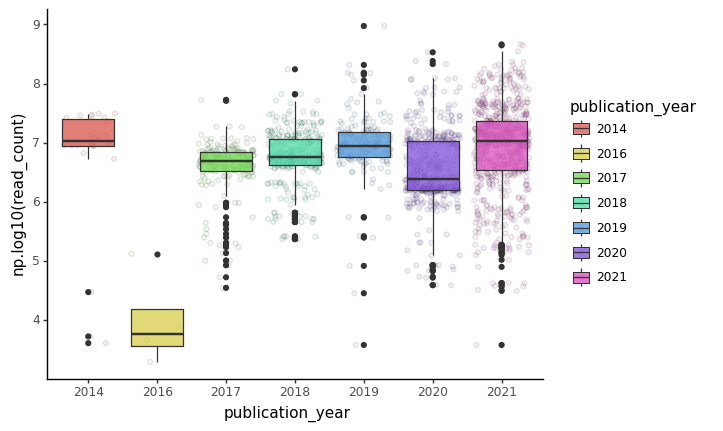

8 Introduction to Python and Pandas
This session is typically ran held in parallel to the Introduction to R and Tidyverse. Participants of the summer schools chose which to attend based on their prior experience. We recommend the introduction to R session if you have no experience with neither R nor Python.
For this chapter’s exercises, if not already performed, you will need to create the conda environment from the yml file in the following link (right click and save as to download), and once created, activate the environment with:
conda activate python-pandas8.1 Introduction to data manipulation in Python with Pandas and visulization
SPAAM Summer School 2023
Over the last few years, Python has gained popularity thanks to the numerous libraries (packages with prewritten functions) in the field of machine learning, statistical data analysis, and bioinformatics. While a few years ago, it was often necessary to go to R for performing routine data manipulation and analysis tasks, nowadays Python has a vast ecosystem of libraries. Libraries exist for many different file formats that you might encounter in metagenomics, such as fasta, fastq, sam, bam, etc.
This tutorial/walkthrough will provide a short introduction to the most popular libraries for data analysis pandas. This library has functions for reading and manipulating tabular data similar to the data.frame() in R together with some basic data plotting codes.
The aim of this walkthrough is to first: get familiar with the Phyton code syntax and use Jupiter Notebook for executing codes and secondly get a kickstart to utilising the endless possibilities of data analysis in Python that can be applied to your data.
8.2 Table of content:
- 8.3 Working in a jupyter environment
- 8.4 Pandas
- 2 - Foreword on Pandas
- 3 - Reading data with Pandas
- 4 - Dealing with missing data
- 5 - Computing basic statistics
- 6 - Filtering
- 8 - GroupBy operations
- 9 - Joining different tables
- 10 - Visualization with Plotnine
8.3 Working in a jupyter environment
This tutorial run-through is using a Jupyter Notebook for writing & executing Python code and for annotating.
Jupyter notebooks are convenient and have two types of cells: Markdown and Code. The markup cell syntax is very similar to R markdown. The markdown cells are used for annotating, which is important for sharing code with collaborators, reproducibility, and documentation.
A few examples are shown below. For a full list of possible syntax click here for a Jupyter Notebook cheatsheet.
list of markdown cell examples:
In many cases, there are multiple possible syntaxes which give the same result. We present only one way in this run-through.
Text
**bold**: bold*italics*: italics
Code
- `inline code` :
inline code
LaTeX math
$ x = \frac{\pi}{42} $: \[ x = \frac{\pi}{42} \]
url links
[link](https://www.python.org/)link
Images
:
The code cells can interpret many different coding languages including Python and Bash. The syntax of the code cells is the same as the syntax of the coding languages, in our case python.
Below are some examples of Python code cells with some useful basic python functions:
print() is a python fuction for printing lines in the terminal print() == echo in bash
print("Hello World from Python!")out - Hello World from Python!
But it can also, for example, run bash commands by adding a ! at the start of the line.
! echo "Hello World from bash!"out - Hello World from bash!
Stings or numbers can be stored as a variable by using the = sign
i = 0Ones a variable is set in one code cell they are stored and can be accessed in other downstream code celles.
print(i)You can also print multiple things together in one print statement such as a number and a string:
print("The number is", i, "Wow!")out - The number is 0 Wow!
8.4 Pandas
8.4.1 Getting started
Pandas is a Python library used for data manipulation and analysis.
We can import the library like this:
import pandas as pdWe set “pandas” to the alias “pd” because we are lazy and don’t want to write the full word too many times.
Now, we can print the current version:
pd.__version__out - '2.0.1'
8.4.2 Pandas data structures
The primary data structures in Pandas are Series and DataFrame.
A DataFrame is a table with columns and rows.
Each column has a column name and each row has an index.

A single row or column (1 dimensional data) is a Series.

For a more in detail pandas getting started tutorial click here
8.4.3 Reading in data
Pandas can read in csv (comma separated values) files, which are tables in text format.
It’s called csv becase each value is separated from the others via a comma, like this:
A,B
5,6
8,4another common tabluar seperater are tsv, where each value is seperated by a tab \t
A\tB
5\t6
8\t4
8.5 3 - Reading data with Pandas
sample_table_url = "https://raw.githubusercontent.com/SPAAM-community/AncientMetagenomeDir/b187df6ebd23dfeb42935fd5020cb615ead3f164/
ancientmetagenome-hostassociated/samples/ancientmetagenome-hostassociated_samples.tsv"
library_table_url = "https://raw.githubusercontent.com/SPAAM-community/AncientMetagenomeDir/b187df6ebd23dfeb42935fd5020cb615ead3f164/
ancientmetagenome-hostassociated/libraries/ancientmetagenome-hostassociated_libraries.tsv"Getting help in Python
help(pd.read_csv)Help on function read_csv in module pandas.io.parsers.readers:
read_csv(filepath_or_buffer: 'FilePath | ReadCsvBuffer[bytes] | ReadCsvBuffer[str]',
sep=<no_default>, delimiter=None, header='infer', names=<no_default>, index_col=None,
usecols=None, squeeze=None, prefix=<no_default>, mangle_dupe_cols=True,
dtype: 'DtypeArg | None' = None, engine: 'CSVEngine | None' = None, converters=None,
true_values=None, false_values=None, skipinitialspace=False, skiprows=None, skipfooter=0,
nrows=None, na_values=None, keep_default_na=True, na_filter=True, verbose=False,
skip_blank_lines=True, parse_dates=None, infer_datetime_format=False, keep_date_col=False,
date_parser=None, dayfirst=False, cache_dates=True, iterator=False, chunksize=None,
compression: 'CompressionOptions' = 'infer', thousands=None, decimal: 'str' = '.',
lineterminator=None, quotechar='"', quoting=0, doublequote=True, escapechar=None,
comment=None, encoding=None, encoding_errors: 'str | None' = 'strict', dialect=None,
error_bad_lines=None, warn_bad_lines=None, on_bad_lines=None, delim_whitespace=False,
low_memory=True, memory_map=False, float_precision=None, storage_options: 'StorageOptions' = None)
Read a comma-separated values (csv) file into DataFrame.
Also supports optionally iterating or breaking of the file
into chunks.
Additional help can be found in the online docs for
`IO Tools <https://pandas.pydata.org/pandas-docs/stable/user_guide/io.html>`_.
Parameters
----------
filepath_or_buffer : str, path object or file-like object
Any valid string path is acceptable. The string could be a URL. Valid
URL schemes include http, ftp, s3, gs, and file. For file URLs, a host is
expected. A local file could be: file://localhost/path/to/table.csv.
If you want to pass in a path object, pandas accepts any ``os.PathLike``.
By file-like object, we refer to objects with a ``read()`` method, such as
a file handle (e.g. via builtin ``open`` function) or ``StringIO``.
sep : str, default ','
Delimiter to use. If sep is None, the C engine cannot automatically detect
the separator, but the Python parsing engine can, meaning the latter will
be used and automatically detect the separator by Python's builtin sniffer
tool, ``csv.Sniffer``. In addition, separators longer than 1 character and
different from ``'\s+'`` will be interpreted as regular expressions and
will also force the use of the Python parsing engine. Note that regex
delimiters are prone to ignoring quoted data. Regex example: ``'\r\t'``.
delimiter : str, default ``None``
Alias for sep.
header : int, list of int, None, default 'infer'
Row number(s) to use as the column names, and the start of the
data. Default behavior is to infer the column names: if no names
are passed the behavior is identical to ``header=0`` and column
names are inferred from the first line of the file, if column
names are passed explicitly then the behavior is identical to
``header=None``. Explicitly pass ``header=0`` to be able to
replace existing names. The header can be a list of integers that
specify row locations for a multi-index on the columns
e.g. [0,1,3]. Intervening rows that are not specified will be
skipped (e.g. 2 in this example is skipped). Note that this
parameter ignores commented lines and empty lines if
``skip_blank_lines=True``, so ``header=0`` denotes the first line of
data rather than the first line of the file.
names : array-like, optional
List of column names to use. If the file contains a header row,
then you should explicitly pass ``header=0`` to override the column names.
Duplicates in this list are not allowed.
index_col : int, str, sequence of int / str, or False, optional, default ``None``
Column(s) to use as the row labels of the ``DataFrame``, either given as
string name or column index. If a sequence of int / str is given, a
MultiIndex is used.
Note: ``index_col=False`` can be used to force pandas to *not* use the first
column as the index, e.g. when you have a malformed file with delimiters at
the end of each line.
usecols : list-like or callable, optional
Return a subset of the columns. If list-like, all elements must either
be positional (i.e. integer indices into the document columns) or strings
that correspond to column names provided either by the user in `names` or
inferred from the document header row(s). If ``names`` are given, the document
header row(s) are not taken into account. For example, a valid list-like
`usecols` parameter would be ``[0, 1, 2]`` or ``['foo', 'bar', 'baz']``.
Element order is ignored, so ``usecols=[0, 1]`` is the same as ``[1, 0]``.
To instantiate a DataFrame from ``data`` with element order preserved use
``pd.read_csv(data, usecols=['foo', 'bar'])[['foo', 'bar']]`` for columns
in ``['foo', 'bar']`` order or
``pd.read_csv(data, usecols=['foo', 'bar'])[['bar', 'foo']]``
for ``['bar', 'foo']`` order.
If callable, the callable function will be evaluated against the column
names, returning names where the callable function evaluates to True. An
example of a valid callable argument would be ``lambda x: x.upper() in
['AAA', 'BBB', 'DDD']``. Using this parameter results in much faster
parsing time and lower memory usage.
squeeze : bool, default False
If the parsed data only contains one column then return a Series.
.. deprecated:: 1.4.0
Append ``.squeeze("columns")`` to the call to ``read_csv`` to squeeze
the data.
prefix : str, optional
Prefix to add to column numbers when no header, e.g. 'X' for X0, X1, ...
.. deprecated:: 1.4.0
Use a list comprehension on the DataFrame's columns after calling ``read_csv``.
mangle_dupe_cols : bool, default True
Duplicate columns will be specified as 'X', 'X.1', ...'X.N', rather than
'X'...'X'. Passing in False will cause data to be overwritten if there
are duplicate names in the columns.
dtype : Type name or dict of column -> type, optional
Data type for data or columns. E.g. {'a': np.float64, 'b': np.int32,
'c': 'Int64'}
Use `str` or `object` together with suitable `na_values` settings
to preserve and not interpret dtype.
If converters are specified, they will be applied INSTEAD
of dtype conversion.
engine : {'c', 'python', 'pyarrow'}, optional
Parser engine to use. The C and pyarrow engines are faster, while the python engine
is currently more feature-complete. Multithreading is currently only supported by
the pyarrow engine.
.. versionadded:: 1.4.0
The "pyarrow" engine was added as an *experimental* engine, and some features
are unsupported, or may not work correctly, with this engine.
converters : dict, optional
Dict of functions for converting values in certain columns. Keys can either
be integers or column labels.
true_values : list, optional
Values to consider as True.
false_values : list, optional
Values to consider as False.
skipinitialspace : bool, default False
Skip spaces after delimiter.
skiprows : list-like, int or callable, optional
Line numbers to skip (0-indexed) or number of lines to skip (int)
at the start of the file.
If callable, the callable function will be evaluated against the row
indices, returning True if the row should be skipped and False otherwise.
An example of a valid callable argument would be ``lambda x: x in [0, 2]``.
skipfooter : int, default 0
Number of lines at bottom of file to skip (Unsupported with engine='c').
nrows : int, optional
Number of rows of file to read. Useful for reading pieces of large files.
na_values : scalar, str, list-like, or dict, optional
Additional strings to recognize as NA/NaN. If dict passed, specific
per-column NA values. By default the following values are interpreted as
NaN: '', '#N/A', '#N/A N/A', '#NA', '-1.#IND', '-1.#QNAN', '-NaN', '-nan',
'1.#IND', '1.#QNAN', '<NA>', 'N/A', 'NA', 'NULL', 'NaN', 'n/a',
'nan', 'null'.
keep_default_na : bool, default True
Whether or not to include the default NaN values when parsing the data.
Depending on whether `na_values` is passed in, the behavior is as follows:
* If `keep_default_na` is True, and `na_values` are specified, `na_values`
is appended to the default NaN values used for parsing.
* If `keep_default_na` is True, and `na_values` are not specified, only
the default NaN values are used for parsing.
* If `keep_default_na` is False, and `na_values` are specified, only
the NaN values specified `na_values` are used for parsing.
* If `keep_default_na` is False, and `na_values` are not specified, no
strings will be parsed as NaN.
Note that if `na_filter` is passed in as False, the `keep_default_na` and
`na_values` parameters will be ignored.
na_filter : bool, default True
Detect missing value markers (empty strings and the value of na_values). In
data without any NAs, passing na_filter=False can improve the performance
of reading a large file.
verbose : bool, default False
Indicate number of NA values placed in non-numeric columns.
skip_blank_lines : bool, default True
If True, skip over blank lines rather than interpreting as NaN values.
parse_dates : bool or list of int or names or list of lists or dict, default False
The behavior is as follows:
* boolean. If True -> try parsing the index.
* list of int or names. e.g. If [1, 2, 3] -> try parsing columns 1, 2, 3
each as a separate date column.
* list of lists. e.g. If [[1, 3]] -> combine columns 1 and 3 and parse as
a single date column.
* dict, e.g. {'foo' : [1, 3]} -> parse columns 1, 3 as date and call
result 'foo'
If a column or index cannot be represented as an array of datetimes,
say because of an unparsable value or a mixture of timezones, the column
or index will be returned unaltered as an object data type. For
non-standard datetime parsing, use ``pd.to_datetime`` after
``pd.read_csv``. To parse an index or column with a mixture of timezones,
specify ``date_parser`` to be a partially-applied
:func:`pandas.to_datetime` with ``utc=True``. See
:ref:`io.csv.mixed_timezones` for more.
Note: A fast-path exists for iso8601-formatted dates.
infer_datetime_format : bool, default False
If True and `parse_dates` is enabled, pandas will attempt to infer the
format of the datetime strings in the columns, and if it can be inferred,
switch to a faster method of parsing them. In some cases this can increase
the parsing speed by 5-10x.
keep_date_col : bool, default False
If True and `parse_dates` specifies combining multiple columns then
keep the original columns.
date_parser : function, optional
Function to use for converting a sequence of string columns to an array of
datetime instances. The default uses ``dateutil.parser.parser`` to do the
conversion. Pandas will try to call `date_parser` in three different ways,
advancing to the next if an exception occurs: 1) Pass one or more arrays
(as defined by `parse_dates`) as arguments; 2) concatenate (row-wise) the
string values from the columns defined by `parse_dates` into a single array
and pass that; and 3) call `date_parser` once for each row using one or
more strings (corresponding to the columns defined by `parse_dates`) as
arguments.
dayfirst : bool, default False
DD/MM format dates, international and European format.
cache_dates : bool, default True
If True, use a cache of unique, converted dates to apply the datetime
conversion. May produce significant speed-up when parsing duplicate
date strings, especially ones with timezone offsets.
.. versionadded:: 0.25.0
iterator : bool, default False
Return TextFileReader object for iteration or getting chunks with
``get_chunk()``.
.. versionchanged:: 1.2
``TextFileReader`` is a context manager.
chunksize : int, optional
Return TextFileReader object for iteration.
See the `IO Tools docs
<https://pandas.pydata.org/pandas-docs/stable/io.html#io-chunking>`_
for more information on ``iterator`` and ``chunksize``.
.. versionchanged:: 1.2
``TextFileReader`` is a context manager.
compression : str or dict, default 'infer'
For on-the-fly decompression of on-disk data. If 'infer' and '%s' is
path-like, then detect compression from the following extensions: '.gz',
'.bz2', '.zip', '.xz', or '.zst' (otherwise no compression). If using
'zip', the ZIP file must contain only one data file to be read in. Set to
``None`` for no decompression. Can also be a dict with key ``'method'`` set
to one of {``'zip'``, ``'gzip'``, ``'bz2'``, ``'zstd'``} and other
key-value pairs are forwarded to ``zipfile.ZipFile``, ``gzip.GzipFile``,
``bz2.BZ2File``, or ``zstandard.ZstdDecompressor``, respectively. As an
example, the following could be passed for Zstandard decompression using a
custom compression dictionary:
``compression={'method': 'zstd', 'dict_data': my_compression_dict}``.
.. versionchanged:: 1.4.0 Zstandard support.
thousands : str, optional
Thousands separator.
decimal : str, default '.'
Character to recognize as decimal point (e.g. use ',' for European data).
lineterminator : str (length 1), optional
Character to break file into lines. Only valid with C parser.
quotechar : str (length 1), optional
The character used to denote the start and end of a quoted item. Quoted
items can include the delimiter and it will be ignored.
quoting : int or csv.QUOTE_* instance, default 0
Control field quoting behavior per ``csv.QUOTE_*`` constants. Use one of
QUOTE_MINIMAL (0), QUOTE_ALL (1), QUOTE_NONNUMERIC (2) or QUOTE_NONE (3).
doublequote : bool, default ``True``
When quotechar is specified and quoting is not ``QUOTE_NONE``, indicate
whether or not to interpret two consecutive quotechar elements INSIDE a
field as a single ``quotechar`` element.
escapechar : str (length 1), optional
One-character string used to escape other characters.
comment : str, optional
Indicates remainder of line should not be parsed. If found at the beginning
of a line, the line will be ignored altogether. This parameter must be a
single character. Like empty lines (as long as ``skip_blank_lines=True``),
fully commented lines are ignored by the parameter `header` but not by
`skiprows`. For example, if ``comment='#'``, parsing
``#empty\na,b,c\n1,2,3`` with ``header=0`` will result in 'a,b,c' being
treated as the header.
encoding : str, optional
Encoding to use for UTF when reading/writing (ex. 'utf-8'). `List of Python
standard encodings
<https://docs.python.org/3/library/codecs.html#standard-encodings>`_ .
.. versionchanged:: 1.2
When ``encoding`` is ``None``, ``errors="replace"`` is passed to
``open()``. Otherwise, ``errors="strict"`` is passed to ``open()``.
This behavior was previously only the case for ``engine="python"``.
.. versionchanged:: 1.3.0
``encoding_errors`` is a new argument. ``encoding`` has no longer an
influence on how encoding errors are handled.
encoding_errors : str, optional, default "strict"
How encoding errors are treated. `List of possible values
<https://docs.python.org/3/library/codecs.html#error-handlers>`_ .
.. versionadded:: 1.3.0
dialect : str or csv.Dialect, optional
If provided, this parameter will override values (default or not) for the
following parameters: `delimiter`, `doublequote`, `escapechar`,
`skipinitialspace`, `quotechar`, and `quoting`. If it is necessary to
override values, a ParserWarning will be issued. See csv.Dialect
documentation for more details.
error_bad_lines : bool, optional, default ``None``
Lines with too many fields (e.g. a csv line with too many commas) will by
default cause an exception to be raised, and no DataFrame will be returned.
If False, then these "bad lines" will be dropped from the DataFrame that is
returned.
.. deprecated:: 1.3.0
The ``on_bad_lines`` parameter should be used instead to specify behavior upon
encountering a bad line instead.
warn_bad_lines : bool, optional, default ``None``
If error_bad_lines is False, and warn_bad_lines is True, a warning for each
"bad line" will be output.
.. deprecated:: 1.3.0
The ``on_bad_lines`` parameter should be used instead to specify behavior upon
encountering a bad line instead.
on_bad_lines : {'error', 'warn', 'skip'} or callable, default 'error'
Specifies what to do upon encountering a bad line (a line with too many fields).
Allowed values are :
- 'error', raise an Exception when a bad line is encountered.
- 'warn', raise a warning when a bad line is encountered and skip that line.
- 'skip', skip bad lines without raising or warning when they are encountered.
.. versionadded:: 1.3.0
- callable, function with signature
``(bad_line: list[str]) -> list[str] | None`` that will process a single
bad line. ``bad_line`` is a list of strings split by the ``sep``.
If the function returns ``None``, the bad line will be ignored.
If the function returns a new list of strings with more elements than
expected, a ``ParserWarning`` will be emitted while dropping extra elements.
Only supported when ``engine="python"``
.. versionadded:: 1.4.0
delim_whitespace : bool, default False
Specifies whether or not whitespace (e.g. ``' '`` or ``' '``) will be
used as the sep. Equivalent to setting ``sep='\s+'``. If this option
is set to True, nothing should be passed in for the ``delimiter``
parameter.
low_memory : bool, default True
Internally process the file in chunks, resulting in lower memory use
while parsing, but possibly mixed type inference. To ensure no mixed
types either set False, or specify the type with the `dtype` parameter.
Note that the entire file is read into a single DataFrame regardless,
use the `chunksize` or `iterator` parameter to return the data in chunks.
(Only valid with C parser).
memory_map : bool, default False
If a filepath is provided for `filepath_or_buffer`, map the file object
directly onto memory and access the data directly from there. Using this
option can improve performance because there is no longer any I/O overhead.
float_precision : str, optional
Specifies which converter the C engine should use for floating-point
values. The options are ``None`` or 'high' for the ordinary converter,
'legacy' for the original lower precision pandas converter, and
'round_trip' for the round-trip converter.
.. versionchanged:: 1.2
storage_options : dict, optional
Extra options that make sense for a particular storage connection, e.g.
host, port, username, password, etc. For HTTP(S) URLs the key-value pairs
are forwarded to ``urllib`` as header options. For other URLs (e.g.
starting with "s3://", and "gcs://") the key-value pairs are forwarded to
``fsspec``. Please see ``fsspec`` and ``urllib`` for more details.
.. versionadded:: 1.2
Returns
-------
DataFrame or TextParser
A comma-separated values (csv) file is returned as two-dimensional
data structure with labeled axes.
See Also
--------
DataFrame.to_csv : Write DataFrame to a comma-separated values (csv) file.
read_csv : Read a comma-separated values (csv) file into DataFrame.
read_fwf : Read a table of fixed-width formatted lines into DataFrame.
Examples
--------
>>> pd.read_csv('data.csv') # doctest: +SKIPsample_df = pd.read_csv(sample_table_url, sep="\t")
library_df = pd.read_csv(library_table_url, sep="\t")sample_df.project_name.nunique()45library_df.project_name.nunique()438.5.1 Listing the columns of the sample dataframe
sample_df.columnsIndex(['project_name', 'publication_year', 'publication_doi', 'site_name',
'latitude', 'longitude', 'geo_loc_name', 'sample_name', 'sample_host',
'sample_age', 'sample_age_doi', 'community_type', 'material', 'archive',
'archive_project', 'archive_accession'],
dtype='object')8.5.2 Looking at the data type of the sample dataframe
sample_df.dtypesproject_name object
publication_year int64
publication_doi object
site_name object
latitude float64
longitude float64
geo_loc_name object
sample_name object
sample_host object
sample_age int64
sample_age_doi object
community_type object
material object
archive object
archive_project object
archive_accession object
dtype: objectint64is for integersfloating64is for floating point precision numbers, also known as double in some other programing languagesobjectis a general type in pandas for everything that is not a number, interval, categorical, or date
8.5.3 Let’s inspect our data
What is the size of our dataframe ?
sample_df.shape(1060, 16)This dataframe has 1060 rows, and 16 columns
Let’s look at the first 5 rows
sample_df.head()| project_name | publication_year | publication_doi | site_name | latitude | longitude | geo_loc_name | sample_name | sample_host | sample_age | sample_age_doi | community_type | material | archive | archive_project | archive_accession | |
|---|---|---|---|---|---|---|---|---|---|---|---|---|---|---|---|---|
| 0 | Warinner2014 | 2014 | 10.1038/ng.2906 | Dalheim | 51.565 | 8.840 | Germany | B61 | Homo sapiens | 900 | 10.1038/ng.2906 | oral | dental calculus | SRA | PRJNA216965 | SRS473742,SRS473743,SRS473744,SRS473745 |
| 1 | Warinner2014 | 2014 | 10.1038/ng.2906 | Dalheim | 51.565 | 8.840 | Germany | G12 | Homo sapiens | 900 | 10.1038/ng.2906 | oral | dental calculus | SRA | PRJNA216965 | SRS473747,SRS473746,SRS473748,SRS473749,SRS473750 |
| 2 | Weyrich2017 | 2017 | 10.1038/nature21674 | Gola Forest | 7.657 | -10.841 | Sierra Leone | Chimp | Pan troglodytes | 100 | 10.1038/nature21674 | oral | dental calculus | SRA | PRJNA685265 | SRS7890499 |
| 3 | Weyrich2017 | 2017 | 10.1038/nature21674 | El Sidrón Cave | 43.386 | -5.328 | Spain | ElSidron1 | Homo sapiens neanderthalensis | 49000 | 10.1038/nature21674 | oral | dental calculus | SRA | PRJNA685265 | SRS7890498 |
| 4 | Weyrich2017 | 2017 | 10.1038/nature21674 | El Sidrón Cave | 43.386 | -5.329 | Spain | ElSidron2 | Homo sapiens neanderthalensis | 49000 | 10.1038/nature21674 | oral | dental calculus | SRA | PRJNA685265 | SRS7890496 |
Unlike R, Python is 0 based language, meaning the first element is of index 0, not like R where it is 1.
Let’s look at the last 5 rows
sample_df.tail()| project_name | publication_year | publication_doi | site_name | latitude | longitude | geo_loc_name | sample_name | sample_host | sample_age | sample_age_doi | community_type | material | archive | archive_project | archive_accession | |
|---|---|---|---|---|---|---|---|---|---|---|---|---|---|---|---|---|
| 1055 | Kazarina2021b | 2021 | 10.1016/j.jasrep.2021.103213 | St. Gertrude’s Church, Riga | 56.958 | 24.121 | Latvia | T2 | Homo sapiens | 400 | 10.1016/j.jasrep.2021.103213 | oral | tooth | ENA | PRJEB47251 | ERS7283094,ERS7283095 |
| 1056 | Kazarina2021b | 2021 | 10.1016/j.jasrep.2021.103213 | St. Gertrude’s Church, Riga | 56.958 | 24.121 | Latvia | T3 | Homo sapiens | 400 | 10.1016/j.jasrep.2021.103213 | oral | tooth | ENA | PRJEB47251 | ERS7283096,ERS7283097 |
| 1057 | Kazarina2021b | 2021 | 10.1016/j.jasrep.2021.103213 | St. Gertrude’s Church, Riga | 56.958 | 24.121 | Latvia | T9 | Homo sapiens | 400 | 10.1016/j.jasrep.2021.103213 | oral | tooth | ENA | PRJEB47251 | ERS7283098,ERS7283099 |
| 1058 | Kazarina2021b | 2021 | 10.1016/j.jasrep.2021.103213 | Dom Square, Riga | 56.949 | 24.104 | Latvia | TZA3 | Homo sapiens | 400 | 10.1016/j.jasrep.2021.103213 | oral | tooth | ENA | PRJEB47251 | ERS7283100,ERS7283101 |
| 1059 | Kazarina2021b | 2021 | 10.1016/j.jasrep.2021.103213 | St. Peter’s Church, Riga | 56.947 | 24.109 | Latvia | TZA4 | Homo sapiens | 500 | 10.1016/j.jasrep.2021.103213 | oral | tooth | ENA | PRJEB47251 | ERS7283102,ERS7283103 |
Let’s randomly inspect 5 rows
sample_df.sample(n=5)| project_name | publication_year | publication_doi | site_name | latitude | longitude | geo_loc_name | sample_name | sample_host | sample_age | sample_age_doi | community_type | material | archive | archive_project | archive_accession | |
|---|---|---|---|---|---|---|---|---|---|---|---|---|---|---|---|---|
| 413 | Neukamm2020 | 2020 | 10.1186/s12915-020-00839-8 | Abusir el-Meleq | 29.240 | 31.100 | Egypt | Abusir1576 | Homo sapiens | 2200 | 10.1038/ncomms15694 | skeletal tissue | bone | ENA | PRJEB33848 | ERS3635981 |
| 754 | Rampelli2021 | 2021 | 10.1038/s42003-021-01689-y | El Salt | 38.687 | -0.508 | Spain | V3 | Homo sapiens neanderthalensis | 44700 | 10.1038/s42003-021-01689-y | gut | sediment | ENA | PRJEB41665 | ERS5428042 |
| 436 | Neukamm2020 | 2020 | 10.1186/s12915-020-00839-8 | Abusir el-Meleq | 29.240 | 31.100 | Egypt | Abusir1606 | Homo sapiens | 2600 | 10.1186/s12915-020-00839-8 | skeletal tissue | bone | ENA | PRJEB33848 | ERS3635928 |
| 474 | Neukamm2020 | 2020 | 10.1186/s12915-020-00839-8 | Abusir el-Meleq | 29.240 | 31.100 | Egypt | Abusir1654 | Homo sapiens | 2300 | 10.1038/ncomms15694 | oral | tooth | ENA | PRJEB33848 | ERS3635960 |
| 573 | Philips2017 | 2017 | 10.1186/s12864-020-06810-9 | Kowalewko | 52.699 | 17.605 | Poland | PCA0040 | Homo sapiens | 1900 | 10.1186/s12864-020-06810-9 | oral | tooth | SRA | PRJNA354503 | SRS1815407 |
8.5.3.0.0.1 Accessing the data by index/columns
The are different way of selecting of subset of a dataframe
Selecting by the row index
# selecting the 10th row, and all columns
sample_df.iloc[9, :]project_name Weyrich2017
publication_year 2017
publication_doi 10.1038/nature21674
site_name Stuttgart-Mühlhausen I
latitude 48.839
longitude 9.227
geo_loc_name Germany
sample_name EuroLBK1
sample_host Homo sapiens
sample_age 7400
sample_age_doi 10.1038/nature21674
community_type oral
material dental calculus
archive SRA
archive_project PRJNA685265
archive_accession SRS7890488
Name: 9, dtype: object# selecting the 10th to 12th row, and all columns
sample_df.iloc[9:12, :]| project_name | publication_year | publication_doi | site_name | latitude | longitude | geo_loc_name | sample_name | sample_host | sample_age | sample_age_doi | community_type | material | archive | archive_project | archive_accession | |
|---|---|---|---|---|---|---|---|---|---|---|---|---|---|---|---|---|
| 9 | Weyrich2017 | 2017 | 10.1038/nature21674 | Stuttgart-Mühlhausen I | 48.839 | 9.227 | Germany | EuroLBK1 | Homo sapiens | 7400 | 10.1038/nature21674 | oral | dental calculus | SRA | PRJNA685265 | SRS7890488 |
| 10 | Weyrich2017 | 2017 | 10.1038/nature21674 | Stuttgart-Mühlhausen I | 48.839 | 9.227 | Germany | EuroLBK2 | Homo sapiens | 7400 | 10.1038/nature21674 | oral | dental calculus | SRA | PRJNA685265 | SRS7890485 |
| 11 | Weyrich2017 | 2017 | 10.1038/nature21674 | Stuttgart-Mühlhausen I | 48.839 | 9.227 | Germany | EuroLBK3 | Homo sapiens | 7400 | 10.1038/nature21674 | oral | dental calculus | SRA | PRJNA685265 | SRS7890490 |
# selecting the 10th to 12th row, and the first to the 4th column
sample_df.iloc[9:12, 0:4]| project_name | publication_year | publication_doi | site_name | |
|---|---|---|---|---|
| 9 | Weyrich2017 | 2017 | 10.1038/nature21674 | Stuttgart-Mühlhausen I |
| 10 | Weyrich2017 | 2017 | 10.1038/nature21674 | Stuttgart-Mühlhausen I |
| 11 | Weyrich2017 | 2017 | 10.1038/nature21674 | Stuttgart-Mühlhausen I |
# selecting the column site_name
sample_df['site_name']0 Dalheim
1 Dalheim
2 Gola Forest
3 El Sidrón Cave
4 El Sidrón Cave
...
1055 St. Gertrude’s Church, Riga
1056 St. Gertrude’s Church, Riga
1057 St. Gertrude’s Church, Riga
1058 Dom Square, Riga
1059 St. Peter’s Church, Riga
Name: site_name, Length: 1060, dtype: object# Also valid, but less preferred
sample_df.site_name0 Dalheim
1 Dalheim
2 Gola Forest
3 El Sidrón Cave
4 El Sidrón Cave
...
1055 St. Gertrude’s Church, Riga
1056 St. Gertrude’s Church, Riga
1057 St. Gertrude’s Church, Riga
1058 Dom Square, Riga
1059 St. Peter’s Church, Riga
Name: site_name, Length: 1060, dtype: object# Removing a row
sample_df.drop(0)| project_name | publication_year | publication_doi | site_name | latitude | longitude | geo_loc_name | sample_name | sample_host | sample_age | sample_age_doi | community_type | material | archive | archive_project | archive_accession | |
|---|---|---|---|---|---|---|---|---|---|---|---|---|---|---|---|---|
| 1 | Warinner2014 | 2014 | 10.1038/ng.2906 | Dalheim | 51.565 | 8.840 | Germany | G12 | Homo sapiens | 900 | 10.1038/ng.2906 | oral | dental calculus | SRA | PRJNA216965 | SRS473747,SRS473746,SRS473748,SRS473749,SRS473750 |
| 2 | Weyrich2017 | 2017 | 10.1038/nature21674 | Gola Forest | 7.657 | -10.841 | Sierra Leone | Chimp | Pan troglodytes | 100 | 10.1038/nature21674 | oral | dental calculus | SRA | PRJNA685265 | SRS7890499 |
| 3 | Weyrich2017 | 2017 | 10.1038/nature21674 | El Sidrón Cave | 43.386 | -5.328 | Spain | ElSidron1 | Homo sapiens neanderthalensis | 49000 | 10.1038/nature21674 | oral | dental calculus | SRA | PRJNA685265 | SRS7890498 |
| 4 | Weyrich2017 | 2017 | 10.1038/nature21674 | El Sidrón Cave | 43.386 | -5.329 | Spain | ElSidron2 | Homo sapiens neanderthalensis | 49000 | 10.1038/nature21674 | oral | dental calculus | SRA | PRJNA685265 | SRS7890496 |
| 5 | Weyrich2017 | 2017 | 10.1038/nature21674 | Spy Cave | 50.480 | 4.674 | Belgium | Spy1 | Homo sapiens neanderthalensis | 35800 | 10.1038/nature21674 | oral | dental calculus | SRA | PRJNA685265 | SRS7890491 |
| … | … | … | … | … | … | … | … | … | … | … | … | … | … | … | … | … |
| 1055 | Kazarina2021b | 2021 | 10.1016/j.jasrep.2021.103213 | St. Gertrude’s Church, Riga | 56.958 | 24.121 | Latvia | T2 | Homo sapiens | 400 | 10.1016/j.jasrep.2021.103213 | oral | tooth | ENA | PRJEB47251 | ERS7283094,ERS7283095 |
| 1056 | Kazarina2021b | 2021 | 10.1016/j.jasrep.2021.103213 | St. Gertrude’s Church, Riga | 56.958 | 24.121 | Latvia | T3 | Homo sapiens | 400 | 10.1016/j.jasrep.2021.103213 | oral | tooth | ENA | PRJEB47251 | ERS7283096,ERS7283097 |
| 1057 | Kazarina2021b | 2021 | 10.1016/j.jasrep.2021.103213 | St. Gertrude’s Church, Riga | 56.958 | 24.121 | Latvia | T9 | Homo sapiens | 400 | 10.1016/j.jasrep.2021.103213 | oral | tooth | ENA | PRJEB47251 | ERS7283098,ERS7283099 |
| 1058 | Kazarina2021b | 2021 | 10.1016/j.jasrep.2021.103213 | Dom Square, Riga | 56.949 | 24.104 | Latvia | TZA3 | Homo sapiens | 400 | 10.1016/j.jasrep.2021.103213 | oral | tooth | ENA | PRJEB47251 | ERS7283100,ERS7283101 |
| 1059 | Kazarina2021b | 2021 | 10.1016/j.jasrep.2021.103213 | St. Peter’s Church, Riga | 56.947 | 24.109 | Latvia | TZA4 | Homo sapiens | 500 | 10.1016/j.jasrep.2021.103213 | oral | tooth | ENA | PRJEB47251 | ERS7283102,ERS7283103 |
1059 rows × 16 columns
# Removing a columm
sample_df.drop('project_name', axis=1)| publication_year | publication_doi | site_name | latitude | longitude | geo_loc_name | sample_name | sample_host | sample_age | sample_age_doi | community_type | material | archive | archive_project | archive_accession | |
|---|---|---|---|---|---|---|---|---|---|---|---|---|---|---|---|
| 0 | 2014 | 10.1038/ng.2906 | Dalheim | 51.565 | 8.840 | Germany | B61 | Homo sapiens | 900 | 10.1038/ng.2906 | oral | dental calculus | SRA | PRJNA216965 | SRS473742,SRS473743,SRS473744,SRS473745 |
| 1 | 2014 | 10.1038/ng.2906 | Dalheim | 51.565 | 8.840 | Germany | G12 | Homo sapiens | 900 | 10.1038/ng.2906 | oral | dental calculus | SRA | PRJNA216965 | SRS473747,SRS473746,SRS473748,SRS473749,SRS473750 |
| 2 | 2017 | 10.1038/nature21674 | Gola Forest | 7.657 | -10.841 | Sierra Leone | Chimp | Pan troglodytes | 100 | 10.1038/nature21674 | oral | dental calculus | SRA | PRJNA685265 | SRS7890499 |
| 3 | 2017 | 10.1038/nature21674 | El Sidrón Cave | 43.386 | -5.328 | Spain | ElSidron1 | Homo sapiens neanderthalensis | 49000 | 10.1038/nature21674 | oral | dental calculus | SRA | PRJNA685265 | SRS7890498 |
| 4 | 2017 | 10.1038/nature21674 | El Sidrón Cave | 43.386 | -5.329 | Spain | ElSidron2 | Homo sapiens neanderthalensis | 49000 | 10.1038/nature21674 | oral | dental calculus | SRA | PRJNA685265 | SRS7890496 |
| … | … | … | … | … | … | … | … | … | … | … | … | … | … | … | … |
| 1055 | 2021 | 10.1016/j.jasrep.2021.103213 | St. Gertrude’s Church, Riga | 56.958 | 24.121 | Latvia | T2 | Homo sapiens | 400 | 10.1016/j.jasrep.2021.103213 | oral | tooth | ENA | PRJEB47251 | ERS7283094,ERS7283095 |
| 1056 | 2021 | 10.1016/j.jasrep.2021.103213 | St. Gertrude’s Church, Riga | 56.958 | 24.121 | Latvia | T3 | Homo sapiens | 400 | 10.1016/j.jasrep.2021.103213 | oral | tooth | ENA | PRJEB47251 | ERS7283096,ERS7283097 |
| 1057 | 2021 | 10.1016/j.jasrep.2021.103213 | St. Gertrude’s Church, Riga | 56.958 | 24.121 | Latvia | T9 | Homo sapiens | 400 | 10.1016/j.jasrep.2021.103213 | oral | tooth | ENA | PRJEB47251 | ERS7283098,ERS7283099 |
| 1058 | 2021 | 10.1016/j.jasrep.2021.103213 | Dom Square, Riga | 56.949 | 24.104 | Latvia | TZA3 | Homo sapiens | 400 | 10.1016/j.jasrep.2021.103213 | oral | tooth | ENA | PRJEB47251 | ERS7283100,ERS7283101 |
| 1059 | 2021 | 10.1016/j.jasrep.2021.103213 | St. Peter’s Church, Riga | 56.947 | 24.109 | Latvia | TZA4 | Homo sapiens | 500 | 10.1016/j.jasrep.2021.103213 | oral | tooth | ENA | PRJEB47251 | ERS7283102,ERS7283103 |
1060 rows × 15 columns
8.5.3.0.1 4 - Dealing with missing data
Checking is some entries if the table have missing data (NA or NaN)
sample_df.isna()| project_name | publication_year | publication_doi | site_name | latitude | longitude | geo_loc_name | sample_name | sample_host | sample_age | sample_age_doi | community_type | material | archive | archive_project | archive_accession | |
|---|---|---|---|---|---|---|---|---|---|---|---|---|---|---|---|---|
| 0 | False | False | False | False | False | False | False | False | False | False | False | False | False | False | False | False |
| 1 | False | False | False | False | False | False | False | False | False | False | False | False | False | False | False | False |
| 2 | False | False | False | False | False | False | False | False | False | False | False | False | False | False | False | False |
| 3 | False | False | False | False | False | False | False | False | False | False | False | False | False | False | False | False |
| 4 | False | False | False | False | False | False | False | False | False | False | False | False | False | False | False | False |
| … | … | … | … | … | … | … | … | … | … | … | … | … | … | … | … | … |
| 1055 | False | False | False | False | False | False | False | False | False | False | False | False | False | False | False | False |
| 1056 | False | False | False | False | False | False | False | False | False | False | False | False | False | False | False | False |
| 1057 | False | False | False | False | False | False | False | False | False | False | False | False | False | False | False | False |
| 1058 | False | False | False | False | False | False | False | False | False | False | False | False | False | False | False | False |
| 1059 | False | False | False | False | False | False | False | False | False | False | False | False | False | False | False | False |
1060 rows × 16 columns
# making the sum by row - axis=1
sample_df.isna().sum(axis=1)0 0
1 0
2 0
3 0
4 0
..
1055 0
1056 0
1057 0
1058 0
1059 0
Length: 1060, dtype: int64Sorting by decreasing order to check which rows have missing values
sample_df.isna().sum(axis=1).sort_values(ascending=False)800 2
962 2
992 2
801 2
802 2
..
362 0
363 0
364 0
365 0
1059 0
Length: 1060, dtype: int64sample_df.iloc[800,:]project_name FellowsYates2021
publication_year 2021
publication_doi 10.1073/pnas.2021655118
site_name Not specified
latitude NaN
longitude NaN
geo_loc_name Democratic Republic of the Congo
sample_name GDC002.A
sample_host Gorilla gorilla gorilla
sample_age 200
sample_age_doi 10.1073/pnas.2021655118
community_type oral
material dental calculus
archive ENA
archive_project PRJEB34569
archive_accession ERS3774403
Name: 800, dtype: objectWhat to do now ? The ideal scenario would be to correct or impute the data.
However, sometimes, the only thing we can do is remove the row with missing data, with the .dropna() function.
Here, we’re just going to ignore them, and deal with it individually if necessary
8.6 5 - Computing basic statistics
TLDR: use the describe() function, the equivalent of summarize in R
sample_df.describe()| publication_year | latitude | longitude | sample_age | |
|---|---|---|---|---|
| count | 1060.000000 | 1021.000000 | 1021.000000 | 1060.000000 |
| mean | 2019.377358 | 40.600493 | 3.749624 | 3588.443396 |
| std | 1.633877 | 18.469421 | 43.790316 | 9862.416855 |
| min | 2014.000000 | -34.030000 | -121.800000 | 100.000000 |
| 25% | 2018.000000 | 29.240000 | -1.257000 | 200.000000 |
| 50% | 2020.000000 | 45.450000 | 14.381000 | 1000.000000 |
| 75% | 2021.000000 | 52.699000 | 23.892000 | 2200.000000 |
| max | 2021.000000 | 79.000000 | 159.346000 | 102000.000000 |
Let’s look at various individual summary statistics We can run them on the whole dataframe (for int or float columns), or on a subset of columns
sample_df.mean()/var/folders/1c/l1qb09f15jddsh65f6xv1n_r0000gp/T/ipykernel_69168/2260452167.py:1:
FutureWarning: Dropping of nuisance columns in DataFrame reductions (with 'numeric_only=None')
is deprecated; in a future version this will raise TypeError. Select only valid columns
before calling the reduction.
publication_year 2019.377358
latitude 40.600493
longitude 3.749624
sample_age 3588.443396
dtype: float64sample_df['publication_year'].describe()count 1060.000000
mean 2019.377358
std 1.633877
min 2014.000000
25% 2018.000000
50% 2020.000000
75% 2021.000000
max 2021.000000
Name: publication_year, dtype: float64# The average publication year
sample_df['publication_year'].mean()2019.377358490566# The median publication year
sample_df['publication_year'].median()2020.0# The minimum, or oldest publication year
sample_df['publication_year'].min()2014# The maximum, or most recent publication year
sample_df['publication_year'].max()2021# The number of sites
sample_df['site_name'].nunique()246# The number of samples from the different hosts
sample_df['sample_host'].value_counts()Homo sapiens 741
Ursus arctos 85
Ambrosia artemisiifolia 46
Arabidopsis thaliana 34
Homo sapiens neanderthalensis 32
Pan troglodytes schweinfurthii 26
Gorilla beringei beringei 15
Canis lupus 12
Gorilla gorilla gorilla 8
Mammuthus primigenius 8
Pan troglodytes verus 7
Rangifer tarandus 6
Gorilla beringei graueri 6
Pan troglodytes ellioti 6
Papio hamadryas 5
Alouatta palliata 5
Conepatus chinga 4
Gerbilliscus boehmi 4
Strigocuscus celebensis 4
Papio anubis 2
Gorilla beringei 2
Papio sp. 1
Pan troglodytes 1
Name: sample_host, dtype: int64# The quantile of the publication years
sample_df['publication_year'].quantile(np.arange(0,1,0.1))0.0 2014.0
0.1 2017.0
0.2 2018.0
0.3 2018.0
0.4 2020.0
0.5 2020.0
0.6 2020.0
0.7 2021.0
0.8 2021.0
0.9 2021.0
Name: publication_year, dtype: float64# We can also visualize it with built-in plot functions of pandas
sample_df['publication_year'].plot.hist()<AxesSubplot:ylabel='Frequency'>
8.7 6 - Filtering
There are different ways of filtering data with Pandas:
- The classic method with bracket indexing/subsetting
- The
query()method
The classic method
# Getting all the publications before 2015
sample_df[sample_df['publication_year'] < 2015 ]| project_name | publication_year | publication_doi | site_name | latitude | longitude | geo_loc_name | sample_name | sample_host | sample_age | sample_age_doi | community_type | material | archive | archive_project | archive_accession | |
|---|---|---|---|---|---|---|---|---|---|---|---|---|---|---|---|---|
| 0 | Warinner2014 | 2014 | 10.1038/ng.2906 | Dalheim | 51.565 | 8.84 | Germany | B61 | Homo sapiens | 900 | 10.1038/ng.2906 | oral | dental calculus | SRA | PRJNA216965 | SRS473742,SRS473743,SRS473744,SRS473745 |
| 1 | Warinner2014 | 2014 | 10.1038/ng.2906 | Dalheim | 51.565 | 8.84 | Germany | G12 | Homo sapiens | 900 | 10.1038/ng.2906 | oral | dental calculus | SRA | PRJNA216965 | SRS473747,SRS473746,SRS473748,SRS473749,SRS473750 |
| 272 | Campana2014 | 2014 | 10.1186/1756-0500-7-111 | Teposcolula Yucundaa | 17.490 | -97.46 | Mexico | TP4 | Homo sapiens | 400 | 10.7183/1045-6635.23.4.467 | skeletal tissue | bone | SRA | PRJNA205039 | SRS428959 |
| 273 | Campana2014 | 2014 | 10.1186/1756-0500-7-111 | Teposcolula Yucundaa | 17.490 | -97.46 | Mexico | TP10 | Homo sapiens | 400 | 10.7183/1045-6635.23.4.467 | skeletal tissue | bone | SRA | PRJNA205039 | SRS428961 |
| 274 | Campana2014 | 2014 | 10.1186/1756-0500-7-111 | Teposcolula Yucundaa | 17.490 | -97.46 | Mexico | TP18 | Homo sapiens | 400 | 10.7183/1045-6635.23.4.467 | skeletal tissue | bone | SRA | PRJNA205039 | SRS428962 |
| 275 | Campana2014 | 2014 | 10.1186/1756-0500-7-111 | Teposcolula Yucundaa | 17.490 | -97.46 | Mexico | TP37 | Homo sapiens | 400 | 10.7183/1045-6635.23.4.467 | skeletal tissue | bone | SRA | PRJNA205039 | SRS428963 |
| 276 | Campana2014 | 2014 | 10.1186/1756-0500-7-111 | Teposcolula Yucundaa | 17.490 | -97.46 | Mexico | TP9 | Homo sapiens | 400 | 10.7183/1045-6635.23.4.467 | skeletal tissue | bone | SRA | PRJNA205039 | SRS428960 |
| 277 | Campana2014 | 2014 | 10.1186/1756-0500-7-111 | Teposcolula Yucundaa | 17.490 | -97.46 | Mexico | TP48 | Homo sapiens | 400 | 10.7183/1045-6635.23.4.467 | skeletal tissue | bone | SRA | PRJNA205039 | SRS428964 |
| 278 | Campana2014 | 2014 | 10.1186/1756-0500-7-111 | Teposcolula Yucundaa | 17.490 | -97.46 | Mexico | TP02,TP10,TP15,TP26 | Homo sapiens | 400 | 10.7183/1045-6635.23.4.467 | skeletal tissue | bone | SRA | PRJNA205039 | SRS428958 |
| 279 | Campana2014 | 2014 | 10.1186/1756-0500-7-111 | Teposcolula Yucundaa | 17.490 | -97.46 | Mexico | TP32,TP42,TP45,TP48 | Homo sapiens | 400 | 10.7183/1045-6635.23.4.467 | skeletal tissue | bone | SRA | PRJNA205039 | SRS428972 |
| 500 | Appelt2014 | 2014 | 10.1128/AEM.03242-13 | Place d’Armes, Namur | 50.460 | 4.86 | Belgium | 4.453 | Homo sapiens | 600 | 10.1128/AEM.03242-13 | gut | palaeofaeces | SRA | PRJNA230469 | SRS510175 |
# Getting all the publications before 2015, only in the Northern hemisphere
sample_df[(sample_df['publication_year'] < 2015) & (sample_df['longitude'] > 0)]| project_name | publication_year | publication_doi | site_name | latitude | longitude | geo_loc_name | sample_name | sample_host | sample_age | sample_age_doi | community_type | material | archive | archive_project | archive_accession | |
|---|---|---|---|---|---|---|---|---|---|---|---|---|---|---|---|---|
| 0 | Warinner2014 | 2014 | 10.1038/ng.2906 | Dalheim | 51.565 | 8.84 | Germany | B61 | Homo sapiens | 900 | 10.1038/ng.2906 | oral | dental calculus | SRA | PRJNA216965 | SRS473742,SRS473743,SRS473744,SRS473745 |
| 1 | Warinner2014 | 2014 | 10.1038/ng.2906 | Dalheim | 51.565 | 8.84 | Germany | G12 | Homo sapiens | 900 | 10.1038/ng.2906 | oral | dental calculus | SRA | PRJNA216965 | SRS473747,SRS473746,SRS473748,SRS473749,SRS473750 |
| 500 | Appelt2014 | 2014 | 10.1128/AEM.03242-13 | Place d’Armes, Namur | 50.460 | 4.86 | Belgium | 4.453 | Homo sapiens | 600 | 10.1128/AEM.03242-13 | gut | palaeofaeces | SRA | PRJNA230469 | SRS510175 |
This syntax can rapidly become quite cumbersome, which is why we can also use the query() method
# Getting all the publications before 2015
sample_df.query("publication_year < 2015")| project_name | publication_year | publication_doi | site_name | latitude | longitude | geo_loc_name | sample_name | sample_host | sample_age | sample_age_doi | community_type | material | archive | archive_project | archive_accession | |
|---|---|---|---|---|---|---|---|---|---|---|---|---|---|---|---|---|
| 0 | Warinner2014 | 2014 | 10.1038/ng.2906 | Dalheim | 51.565 | 8.84 | Germany | B61 | Homo sapiens | 900 | 10.1038/ng.2906 | oral | dental calculus | SRA | PRJNA216965 | SRS473742,SRS473743,SRS473744,SRS473745 |
| 1 | Warinner2014 | 2014 | 10.1038/ng.2906 | Dalheim | 51.565 | 8.84 | Germany | G12 | Homo sapiens | 900 | 10.1038/ng.2906 | oral | dental calculus | SRA | PRJNA216965 | SRS473747,SRS473746,SRS473748,SRS473749,SRS473750 |
| 272 | Campana2014 | 2014 | 10.1186/1756-0500-7-111 | Teposcolula Yucundaa | 17.490 | -97.46 | Mexico | TP4 | Homo sapiens | 400 | 10.7183/1045-6635.23.4.467 | skeletal tissue | bone | SRA | PRJNA205039 | SRS428959 |
| 273 | Campana2014 | 2014 | 10.1186/1756-0500-7-111 | Teposcolula Yucundaa | 17.490 | -97.46 | Mexico | TP10 | Homo sapiens | 400 | 10.7183/1045-6635.23.4.467 | skeletal tissue | bone | SRA | PRJNA205039 | SRS428961 |
| 274 | Campana2014 | 2014 | 10.1186/1756-0500-7-111 | Teposcolula Yucundaa | 17.490 | -97.46 | Mexico | TP18 | Homo sapiens | 400 | 10.7183/1045-6635.23.4.467 | skeletal tissue | bone | SRA | PRJNA205039 | SRS428962 |
| 275 | Campana2014 | 2014 | 10.1186/1756-0500-7-111 | Teposcolula Yucundaa | 17.490 | -97.46 | Mexico | TP37 | Homo sapiens | 400 | 10.7183/1045-6635.23.4.467 | skeletal tissue | bone | SRA | PRJNA205039 | SRS428963 |
| 276 | Campana2014 | 2014 | 10.1186/1756-0500-7-111 | Teposcolula Yucundaa | 17.490 | -97.46 | Mexico | TP9 | Homo sapiens | 400 | 10.7183/1045-6635.23.4.467 | skeletal tissue | bone | SRA | PRJNA205039 | SRS428960 |
| 277 | Campana2014 | 2014 | 10.1186/1756-0500-7-111 | Teposcolula Yucundaa | 17.490 | -97.46 | Mexico | TP48 | Homo sapiens | 400 | 10.7183/1045-6635.23.4.467 | skeletal tissue | bone | SRA | PRJNA205039 | SRS428964 |
| 278 | Campana2014 | 2014 | 10.1186/1756-0500-7-111 | Teposcolula Yucundaa | 17.490 | -97.46 | Mexico | TP02,TP10,TP15,TP26 | Homo sapiens | 400 | 10.7183/1045-6635.23.4.467 | skeletal tissue | bone | SRA | PRJNA205039 | SRS428958 |
| 279 | Campana2014 | 2014 | 10.1186/1756-0500-7-111 | Teposcolula Yucundaa | 17.490 | -97.46 | Mexico | TP32,TP42,TP45,TP48 | Homo sapiens | 400 | 10.7183/1045-6635.23.4.467 | skeletal tissue | bone | SRA | PRJNA205039 | SRS428972 |
| 500 | Appelt2014 | 2014 | 10.1128/AEM.03242-13 | Place d’Armes, Namur | 50.460 | 4.86 | Belgium | 4.453 | Homo sapiens | 600 | 10.1128/AEM.03242-13 | gut | palaeofaeces | SRA | PRJNA230469 | SRS510175 |
# Getting all the publications before 2015, only the Northern hemisphere
sample_df.query("publication_year < 2015 and longitude > 0 ")| project_name | publication_year | publication_doi | site_name | latitude | longitude | geo_loc_name | sample_name | sample_host | sample_age | sample_age_doi | community_type | material | archive | archive_project | archive_accession | |
|---|---|---|---|---|---|---|---|---|---|---|---|---|---|---|---|---|
| 0 | Warinner2014 | 2014 | 10.1038/ng.2906 | Dalheim | 51.565 | 8.84 | Germany | B61 | Homo sapiens | 900 | 10.1038/ng.2906 | oral | dental calculus | SRA | PRJNA216965 | SRS473742,SRS473743,SRS473744,SRS473745 |
| 1 | Warinner2014 | 2014 | 10.1038/ng.2906 | Dalheim | 51.565 | 8.84 | Germany | G12 | Homo sapiens | 900 | 10.1038/ng.2906 | oral | dental calculus | SRA | PRJNA216965 | SRS473747,SRS473746,SRS473748,SRS473749,SRS473750 |
| 500 | Appelt2014 | 2014 | 10.1128/AEM.03242-13 | Place d’Armes, Namur | 50.460 | 4.86 | Belgium | 4.453 | Homo sapiens | 600 | 10.1128/AEM.03242-13 | gut | palaeofaeces | SRA | PRJNA230469 | SRS510175 |
8.8 7 - GroupBy operations, and computing statistics on grouped values
The “groupBy” operation, as the name suggests, allows us to group values by a grouping key, and perform a groupwise operation.
For example, we can group by the sample_host and get the age of the youngest sample in each group
sample_df.groupby("sample_host")['sample_age'].min()sample_host
Alouatta palliata 200
Ambrosia artemisiifolia 100
Arabidopsis thaliana 100
Canis lupus 400
Conepatus chinga 100
Gerbilliscus boehmi 100
Gorilla beringei 100
Gorilla beringei beringei 200
Gorilla beringei graueri 200
Gorilla gorilla gorilla 200
Homo sapiens 100
Homo sapiens neanderthalensis 35800
Mammuthus primigenius 41800
Pan troglodytes 100
Pan troglodytes ellioti 200
Pan troglodytes schweinfurthii 100
Pan troglodytes verus 200
Papio anubis 100
Papio hamadryas 100
Papio sp. 100
Rangifer tarandus 100
Strigocuscus celebensis 100
Ursus arctos 100
Name: sample_age, dtype: int64Here min() is a so-called aggregation function
Notice that .value_counts() is actually a special case of .groupby()
sample_df.groupby("sample_host")["sample_host"].count()sample_host
Alouatta palliata 5
Ambrosia artemisiifolia 46
Arabidopsis thaliana 34
Canis lupus 12
Conepatus chinga 4
Gerbilliscus boehmi 4
Gorilla beringei 2
Gorilla beringei beringei 15
Gorilla beringei graueri 6
Gorilla gorilla gorilla 8
Homo sapiens 741
Homo sapiens neanderthalensis 32
Mammuthus primigenius 8
Pan troglodytes 1
Pan troglodytes ellioti 6
Pan troglodytes schweinfurthii 26
Pan troglodytes verus 7
Papio anubis 2
Papio hamadryas 5
Papio sp. 1
Rangifer tarandus 6
Strigocuscus celebensis 4
Ursus arctos 85
Name: sample_host, dtype: int648.9 8 - Reshaping data, from wide to long and back

8.9.1 From wide to long/tidy
The tidy format, or long format idea is that one column = one kind of data.
Unfortunately for this tutorial, the AncientMetagenomeDir tables are already in the tidy format (good), so we’ll see an example or the wide format just below
wide_df = pd.DataFrame(
[
[150,155,157,160],
[149,153,154,155]
]
, index = ['John','Jack']
, columns = [1991,1992,1993, 1994]
).rename_axis('individual').reset_index()
wide_df| individual | 1991 | 1992 | 1993 | 1994 | |
|---|---|---|---|---|---|
| 0 | John | 150 | 155 | 157 | 160 |
| 1 | Jack | 149 | 153 | 154 | 155 |
In this hypothetic dataframe, we have the years as column, the individual as index, and their height as value.
We’ll reformat to the tidy/long format using the .melt() function
tidy_df = wide_df.melt(id_vars='individual', var_name='birthyear', value_name='height')
tidy_df| individual | birthyear | height | |
|---|---|---|---|
| 0 | John | 1991 | 150 |
| 1 | Jack | 1991 | 149 |
| 2 | John | 1992 | 155 |
| 3 | Jack | 1992 | 153 |
| 4 | John | 1993 | 157 |
| 5 | Jack | 1993 | 154 |
| 6 | John | 1994 | 160 |
| 7 | Jack | 1994 | 155 |
Bonus: How to deal with a dataframe with the kind of data indicated in the column name, typically like so
wide_df = pd.DataFrame(
[
[150,155,157,160],
[149,153,154,155]
]
, index = ['John','Jack']
, columns = ["year-1991","year-1992","year-1993", "year-1994"]
).rename_axis('individual').reset_index()
wide_df| individual | year-1991 | year-1992 | year-1993 | year-1994 | |
|---|---|---|---|---|---|
| 0 | John | 150 | 155 | 157 | 160 |
| 1 | Jack | 149 | 153 | 154 | 155 |
pd.wide_to_long(wide_df, ['year'], i='individual', j='birthyear', sep="-").rename(columns={'year':'height'})| height | ||
|---|---|---|
| individual | birthyear | |
| John | 1991 | 150 |
| Jack | 1991 | 149 |
| John | 1992 | 155 |
| Jack | 1992 | 153 |
| John | 1993 | 157 |
| Jack | 1993 | 154 |
| John | 1994 | 160 |
| Jack | 1994 | 155 |
8.9.2 From long/tidy to wide format using the .pivot() function.
tidy_df.pivot(index='individual', columns='birthyear', values='height')/Users/maxime/mambaforge/envs/intro-data/lib/python3.10/site-packages/pandas/core/algorithms.py:798: FutureWarning: In a future version, the Index constructor will not infer numeric dtypes when passed object-dtype sequences (matching Series behavior)| birthyear | 1991 | 1992 | 1993 | 1994 |
|---|---|---|---|---|
| individual | ||||
| Jack | 149 | 153 | 154 | 155 |
| John | 150 | 155 | 157 | 160 |
8.10 9 - Joining two different tables
In AncientMetagenomeDir, the information about each sample is located in sample table, and about the library in the library table.
To match these two together, we need to join the tables together.
To do so, we need a column in common between the two tables, the so-called joining key (this key can be the index)

For the samples and libraries dataframe, the joining key is the column sample_name
sample_df.merge(library_df, on='sample_name').columnsIndex(['project_name_x', 'publication_year_x', 'publication_doi', 'site_name',
'latitude', 'longitude', 'geo_loc_name', 'sample_name', 'sample_host',
'sample_age', 'sample_age_doi', 'community_type', 'material',
'archive_x', 'archive_project_x', 'archive_accession', 'project_name_y',
'publication_year_y', 'data_publication_doi', 'archive_y',
'archive_project_y', 'archive_sample_accession', 'library_name',
'strand_type', 'library_polymerase', 'library_treatment',
'library_concentration', 'instrument_model', 'library_layout',
'library_strategy', 'read_count', 'archive_data_accession',
'download_links', 'download_md5s', 'download_sizes'],
dtype='object')We have some duplicate columns that we can get rid of:
merged_df = sample_df.merge(library_df.drop(['project_name', 'publication_year', 'archive_project', 'archive'], axis=1), on='sample_name')
merged_df| project_name | publication_year | publication_doi | site_name | latitude | longitude | geo_loc_name | sample_name | sample_host | sample_age | … | library_treatment | library_concentration | instrument_model | library_layout | library_strategy | read_count | archive_data_accession | download_links | download_md5s | download_sizes | |
|---|---|---|---|---|---|---|---|---|---|---|---|---|---|---|---|---|---|---|---|---|---|
| 0 | Warinner2014 | 2014 | 10.1038/ng.2906 | Dalheim | 51.565 | 8.84 | Germany | B61 | Homo sapiens | 900 | … | none | NaN | Illumina HiSeq 2000 | SINGLE | WGS | 13228381 | SRR957738 | ftp.sra.ebi.ac.uk/vol1/fastq/SRR957/SRR957738/… | 9c40c43b5d455e760ae8db924347f0b2 | 953396663 |
| 1 | Warinner2014 | 2014 | 10.1038/ng.2906 | Dalheim | 51.565 | 8.84 | Germany | B61 | Homo sapiens | 900 | … | none | NaN | Illumina HiSeq 2000 | SINGLE | WGS | 13260566 | SRR957739 | ftp.sra.ebi.ac.uk/vol1/fastq/SRR957/SRR957739/… | dec1507f742de109529638bf00e0732f | 1026825795 |
| 2 | Warinner2014 | 2014 | 10.1038/ng.2906 | Dalheim | 51.565 | 8.84 | Germany | B61 | Homo sapiens | 900 | … | none | NaN | Illumina HiSeq 2000 | SINGLE | WGS | 8869866 | SRR957740 | ftp.sra.ebi.ac.uk/vol1/fastq/SRR957/SRR957740/… | bc49c59f489b4009206f8abcb737d55d | 661500786 |
| 3 | Warinner2014 | 2014 | 10.1038/ng.2906 | Dalheim | 51.565 | 8.84 | Germany | B61 | Homo sapiens | 900 | … | none | NaN | Illumina HiSeq 2000 | SINGLE | WGS | 11275013 | SRR957741 | ftp.sra.ebi.ac.uk/vol1/fastq/SRR957/SRR957741/… | e02e3549ddd3ba6dc278a7f573c07321 | 877360302 |
| 4 | Warinner2014 | 2014 | 10.1038/ng.2906 | Dalheim | 51.565 | 8.84 | Germany | G12 | Homo sapiens | 900 | … | none | NaN | Illumina HiSeq 2000 | SINGLE | WGS | 8978974 | SRR957742 | ftp.sra.ebi.ac.uk/vol1/fastq/SRR957/SRR957742/… | b7c620b8ee165c08bee204529341ca5b | 690614774 |
| … | … | … | … | … | … | … | … | … | … | … | … | … | … | … | … | … | … | … | … | … | … |
| 1802 | Maixner2021 | 2021 | 10.1016/j.cub.2021.09.031 | Edlersbergwerk - oben, Hallstatt | 47.560 | 13.63 | Austria | 2612 | Homo sapiens | 150 | … | none | NaN | Illumina MiSeq | PAIRED | WGS | 1858404 | ERR5766179 | ftp.sra.ebi.ac.uk/vol1/fastq/ERR576/009/ERR576… | 542787c645b0aeebe15c66cc926d3f69;0bc58d56be3c3… | 86783041;98100690 |
| 1803 | Maixner2021 | 2021 | 10.1016/j.cub.2021.09.031 | Edlersbergwerk - oben, Hallstatt | 47.560 | 13.63 | Austria | 2612 | Homo sapiens | 150 | … | none | NaN | Illumina MiSeq | PAIRED | WGS | 1603064 | ERR5766180 | ftp.sra.ebi.ac.uk/vol1/fastq/ERR576/000/ERR576… | 022bb28da460e66590e974b4135bdd2e;f88acec67b648… | 74375931;77621627 |
| 1804 | Maixner2021 | 2021 | 10.1016/j.cub.2021.09.031 | Edlersbergwerk - oben, Hallstatt | 47.560 | 13.63 | Austria | 2612 | Homo sapiens | 150 | … | none | NaN | Illumina MiSeq | PAIRED | WGS | 1075088 | ERR5766181 | ftp.sra.ebi.ac.uk/vol1/fastq/ERR576/001/ERR576… | 57fc575d32db14f1d5c1ed7f6a106e91;4f57b9d978b53… | 51852071;56288763 |
| 1805 | Maixner2021 | 2021 | 10.1016/j.cub.2021.09.031 | Edlersbergwerk - oben, Hallstatt | 47.560 | 13.63 | Austria | 2612 | Homo sapiens | 150 | … | none | NaN | Illumina HiSeq 2500 | PAIRED | WGS | 138836358 | ERR5766182 | ftp.sra.ebi.ac.uk/vol1/fastq/ERR576/002/ERR576… | 64e63df8da7542957d1d9eb08e764d38;3fc6cba02c74d… | 4332353625;4420486328 |
| 1806 | Maixner2021 | 2021 | 10.1016/j.cub.2021.09.031 | Edlersbergwerk - oben, Hallstatt | 47.560 | 13.63 | Austria | 2612 | Homo sapiens | 150 | … | none | NaN | HiSeq X Ten | PAIRED | WGS | 84192332 | ERR5766183 | ftp.sra.ebi.ac.uk/vol1/fastq/ERR576/003/ERR576… | 43ac661c4e211ed6ee2940dcab8b13cb;88de66a85df92… | 3128863954;3460789287 |
1807 rows × 31 columns
8.11 10 - Visualizing some of the results with Plotnine
Plotnine is the Python clone of ggplot2, the syntax is identical, which makes it great if you’re working with data in tidy/long format, and are already familiar with the ggplot2 syntax
ggplot(merged_df, aes(x='publication_year')) + geom_histogram() + theme_classic()/Users/maxime/mambaforge/envs/intro-data/lib/python3.10/
site-packages/plotnine/stats/stat_bin.py:95:
PlotnineWarning: 'stat_bin()' using 'bins = 15'. Pick better value with 'binwidth'.
<ggplot: (366051178)>We can start to ask some questions, for example, is the sequencing depth increasing with the years ?
merged_df['publication_year'] = merged_df['publication_year'].astype('category')ggplot(merged_df, aes(x='publication_year', y='np.log10(read_count)', fill='publication_year')) +
geom_jitter(alpha=0.1) + geom_boxplot(alpha=0.8) + theme_classic()
<ggplot: (366112582)>We could ask the same question, but first grouping the samples by publication year
avg_read_count_by_year = merged_df.groupby('publication_year')['read_count'].mean().to_frame().reset_index()
avg_read_count_by_year| publication_year | read_count | |
|---|---|---|
| 0 | 2014 | 1.437173e+07 |
| 1 | 2016 | 3.653450e+04 |
| 2 | 2017 | 5.712598e+06 |
| 3 | 2018 | 9.273287e+06 |
| 4 | 2019 | 2.211632e+07 |
| 5 | 2020 | 1.111819e+07 |
| 6 | 2021 | 2.547655e+07 |
ggplot(avg_read_count_by_year, aes(x='publication_year', y='np.log10(read_count)', fill='publication_year')) + geom_point()
<ggplot: (366206706)>Your turn ! Make a plot to investigate the relation between the type of library treatment throughout the publication years
8.12 11 - Bonus, dealing with ill-formatted columns
Sometimes, colums can contains entries which could be split in multiple columns, typically values separated by a comma. In AncientMetagenomeDir, this is the case with the archive accession column.
Here is how we would solve it with pandas
sample_df.assign(archive_accession = sample_df.archive_accession.str.split(",")).explode('archive_accession')| project_name | publication_year | publication_doi | site_name | latitude | longitude | geo_loc_name | sample_name | sample_host | sample_age | sample_age_doi | community_type | material | archive | archive_project | archive_accession | |
|---|---|---|---|---|---|---|---|---|---|---|---|---|---|---|---|---|
| 0 | Warinner2014 | 2014 | 10.1038/ng.2906 | Dalheim | 51.565 | 8.840 | Germany | B61 | Homo sapiens | 900 | 10.1038/ng.2906 | oral | dental calculus | SRA | PRJNA216965 | SRS473742 |
| 0 | Warinner2014 | 2014 | 10.1038/ng.2906 | Dalheim | 51.565 | 8.840 | Germany | B61 | Homo sapiens | 900 | 10.1038/ng.2906 | oral | dental calculus | SRA | PRJNA216965 | SRS473743 |
| 0 | Warinner2014 | 2014 | 10.1038/ng.2906 | Dalheim | 51.565 | 8.840 | Germany | B61 | Homo sapiens | 900 | 10.1038/ng.2906 | oral | dental calculus | SRA | PRJNA216965 | SRS473744 |
| 0 | Warinner2014 | 2014 | 10.1038/ng.2906 | Dalheim | 51.565 | 8.840 | Germany | B61 | Homo sapiens | 900 | 10.1038/ng.2906 | oral | dental calculus | SRA | PRJNA216965 | SRS473745 |
| 1 | Warinner2014 | 2014 | 10.1038/ng.2906 | Dalheim | 51.565 | 8.840 | Germany | G12 | Homo sapiens | 900 | 10.1038/ng.2906 | oral | dental calculus | SRA | PRJNA216965 | SRS473747 |
| … | … | … | … | … | … | … | … | … | … | … | … | … | … | … | … | … |
| 1057 | Kazarina2021b | 2021 | 10.1016/j.jasrep.2021.103213 | St. Gertrude’s Church, Riga | 56.958 | 24.121 | Latvia | T9 | Homo sapiens | 400 | 10.1016/j.jasrep.2021.103213 | oral | tooth | ENA | PRJEB47251 | ERS7283099 |
| 1058 | Kazarina2021b | 2021 | 10.1016/j.jasrep.2021.103213 | Dom Square, Riga | 56.949 | 24.104 | Latvia | TZA3 | Homo sapiens | 400 | 10.1016/j.jasrep.2021.103213 | oral | tooth | ENA | PRJEB47251 | ERS7283100 |
| 1058 | Kazarina2021b | 2021 | 10.1016/j.jasrep.2021.103213 | Dom Square, Riga | 56.949 | 24.104 | Latvia | TZA3 | Homo sapiens | 400 | 10.1016/j.jasrep.2021.103213 | oral | tooth | ENA | PRJEB47251 | ERS7283101 |
| 1059 | Kazarina2021b | 2021 | 10.1016/j.jasrep.2021.103213 | St. Peter’s Church, Riga | 56.947 | 24.109 | Latvia | TZA4 | Homo sapiens | 500 | 10.1016/j.jasrep.2021.103213 | oral | tooth | ENA | PRJEB47251 | ERS7283102 |
| 1059 | Kazarina2021b | 2021 | 10.1016/j.jasrep.2021.103213 | St. Peter’s Church, Riga | 56.947 | 24.109 | Latvia | TZA4 | Homo sapiens | 500 | 10.1016/j.jasrep.2021.103213 | oral | tooth | ENA | PRJEB47251 | ERS7283103 |
1262 rows × 16 columns
8.13 Lecture from 2022
Here are the lecture from the previous course, as well as the links to the material from which the current practical was derived.
Lecture slides and video from the 2022 edition of the summer school.
PDF version of these slides can be downloaded from here.
This session is run using a Jupyter notebook. This can be found here. However, it will already be installed on compute nodes during the summer school.
We highly recommend viewing this walkthrough via the Jupyter notebook above! The output of commands on the website for this walkthrough are displayed in their own code blocks - be wary of what you copy-paste!